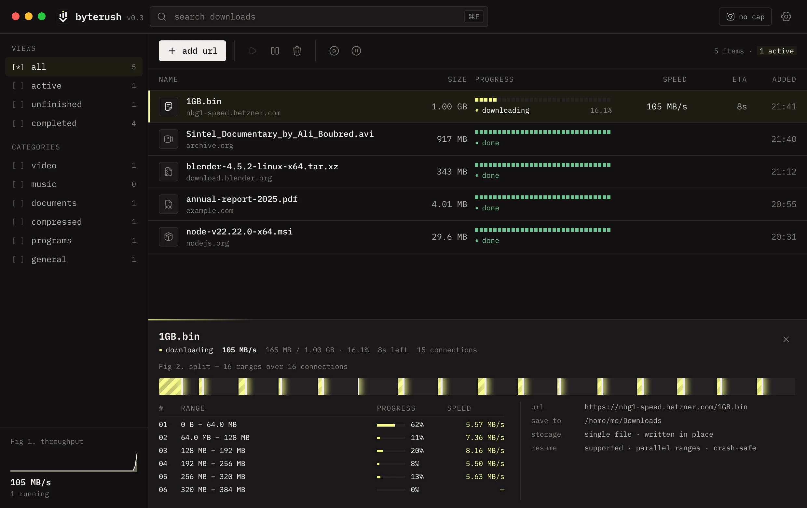
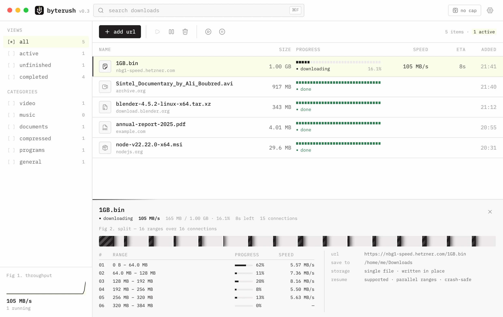

Windows
your systemWindows 10 and 11 · x64
The installer is the usual choice. The MSI suits managed or scripted installs.
Byterush splits every file across up to 32 connections, picks up where it stopped after a restart or a crash, and takes over the downloads your browser starts, with the same session, so protected sites keep working.
01 · in action
The same 961 MB file from archive.org, clicked in Chrome twice: once on its own, once with Byterush taking it over. Two real screen recordings, timed from the click.
The demo video can't be played here. Try another browser.
Byterush follows your system theme. The same window, both ways.


02 · speed
Same file, same machine, same evening: one connection (how browsers download) against Byterush.
A browser downloads each file over one connection. Byterush opens several and splits the file between them.
Sample numbers. These are stand-ins until this test is run; they are not a measurement.
| Run | Time | Average speed | vs. browser |
|---|
The gain is largest on slow, busy or distant servers. When one connection already fills your line, for example a fast CDN nearby, Byterush can't beat your own bandwidth and the times come out about the same.
03 · features
Fast when the server allows it, careful when it doesn't, and quiet the rest of the time.
Each file is split into ranges that download side by side and land straight in place. When a connection finishes, it takes half of the biggest range still left, so none of them sit idle.
Progress is checkpointed to disk every few seconds. When Byterush starts again, downloads carry on from the last checkpoint by themselves.
Chrome and Edge hand each download over with their cookies, user agent and referer, so logins and bot checks carry over.
When a download pauses or fails because its link expired, click the link again in the browser and it continues where it stopped.
Byterush only takes over when the server sends the exact same file. Otherwise the browser keeps it.
Three at a time by default. The rest wait their turn, or wait for later.
One limit for every download, switched on from the toolbar.
Video, music, documents, archives and programs each get their own folder.
One pattern with a number range and zero padding queues the whole series.
Copy a link to a file anywhere and Byterush offers to download it.
Partial files live on an SSD while they download, then move to their folder.
A virtualized list draws only the rows you can see, so huge queues stay smooth.
The browser bridge only listens on 127.0.0.1, and nothing is sent home.
04 · how it works
Byterush asks the server for different parts of the same file at once. Here is a 4 GB file over eight connections.
05 · browser extension
The extension for Chrome and Edge watches the browser's downloads and passes them to the app on your computer.
127.0.0.1.The browser's copy is cancelled and Byterush downloads it over all its connections.
A challenge page, a different size or a one-time link: the browser simply carries on with its own download.
extension folder shipped with the app and opens your browser's extensions page. You can also download the extension as a .zip from the release and unzip it.chrome://extensions (in Edge, edge://extensions) and switch on Developer mode.extension folder.06 · compared
What changes when Byterush takes over a download from Chrome or Edge.
| Feature | Browser | Byterush |
|---|---|---|
| Connections per file | 1 | Up to 32, 8 by default, re-split as they finish |
| After quitting, a reboot or a crash | Interrupted; resumed by hand, if the server allows | Continues by itself from the last checkpoint |
| Connection drops | Often stops with a network error | Retried with backoff |
| Link expires halfway | Start again from zero | Click the link again, it continues |
| Speed limit | None built in | Global cap from the toolbar |
| Queue | Everything starts at once | Downloads at a time and “download later” |
| Folders by type | One downloads folder | Video, music, documents, archives, programs |
| Batch from a pattern | No | img*.jpg with number ranges |
| Links copied to the clipboard | No | Offers to download them |
| Price | Free | Free and open source |
07 · download
Free for Windows, macOS and Linux. Every build comes from the latest GitHub release.
Byterush is a desktop app. Open this page on your Windows, macOS or Linux computer to install it there.
Windows 10 and 11 · x64
The installer is the usual choice. The MSI suits managed or scripted installs.
macOS 11 Big Sur or later
Apple Silicon is any Mac with an M chip. Not sure? Apple menu → About This Mac.
64-bit · x64 and arm64
x64
The AppImage runs on most distributions: make it executable and open it. The arm64 builds are for ARM computers running 64-bit Linux.
Older versions and every file of a release are on GitHub Releases. Rather build it yourself? See building from source. To check a download, compare it with the release's SHA256SUMS.txt.
08 · questions
Yes to both. There are no plans, ads, trials or accounts. The full source of the app and the extension is on GitHub, and you can build it yourself.
It depends on the server. Byterush helps most when a server limits each connection or is far away, and very little when a single connection already fills your line.
The extension asks for these permissions, each for one job:
downloads to notice a download, hold it while the app checks the file, and cancel or resume it.webRequest, cookies and access to all sites to read the headers and cookies the browser sent for that download, so the app can send the same ones.contextMenus for “Download with Byterush” and storage for its settings and the list of recent hand-overs.It only talks to the Byterush app on your own computer at 127.0.0.1. The app only accepts calls that carry the extension's id, and nothing is sent anywhere else: no account, no analytics.
Usually, yes. The extension passes along the exact session the browser used, including clearance cookies, user agent and referer, so the server sees the same visitor that just passed the check.
Before taking over, Byterush opens one connection and checks that it gets the same file. If it gets a challenge page, a different size, or the link only worked once (common for invoices and form posts), the browser keeps its own download so nothing is lost. You can also switch the extension off for a site in its popup.
Many sites hand out links that only work for a few minutes or hours. If a download pauses or fails because of that, go back to the page and click the link again. The extension sends the fresh link to Byterush, which continues the existing download from where it stopped instead of starting over.
Progress is checkpointed to disk as it downloads. Next time Byterush starts, unfinished downloads resume from their last checkpoint by themselves.
No. You can paste a link with “+ add url”, let the clipboard monitor offer copied links, or queue a whole pattern with a batch download. The extension just makes it automatic for downloads that start in Chrome or Edge.
Windows 10 and 11 (x64), macOS 11 or later on Apple Silicon and Intel, and 64-bit Linux, x64 and arm64, as an AppImage, a .deb or an .rpm. The extension is built for Chrome and Edge; there is no Firefox version yet.
In your system's app-data folder, on your computer only:
%APPDATA%\com.byterush.app~/Library/Application Support/com.byterush.app~/.local/share/com.byterush.appYour files go to the download folder you choose, optionally sorted into folders by type.